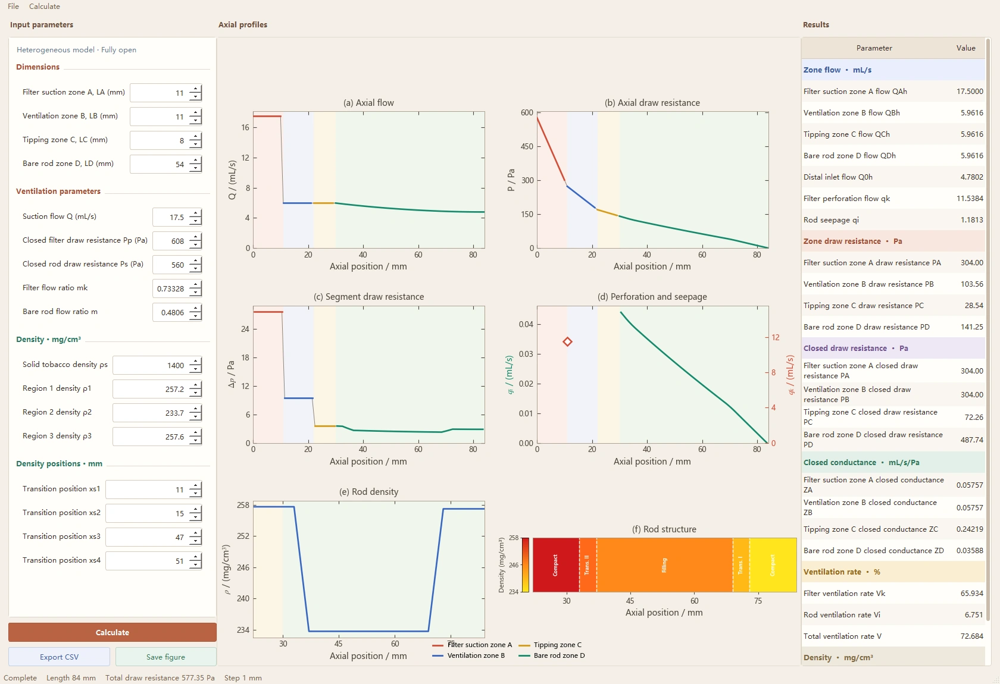

Tobacco Flow Simulation Software
Simulation of airflow, ventilation, and draw resistance in cigarettes.
Why packing matters
The tobacco rod is often packed more densely near both ends than in the middle. A model that assumes uniform packing misses those changes in permeability. We model how the density profile, filter vents, and paper permeability affect airflow and pressure along the rod.

Ventilation analysis software
The software calculates how airflow and pressure vary along the cigarette and reports ventilation by section.
